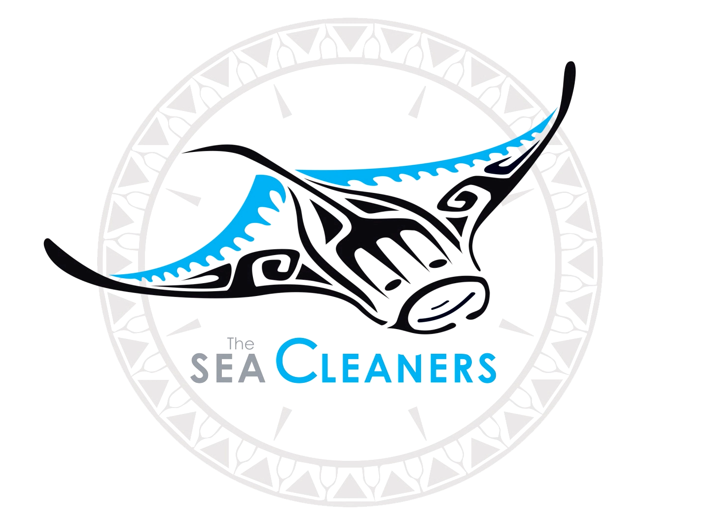
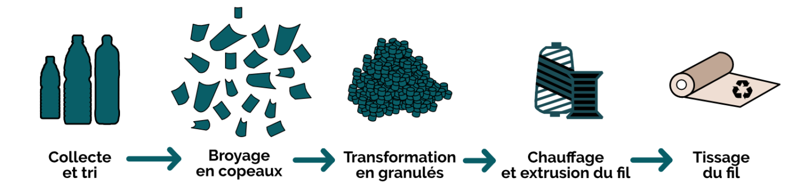
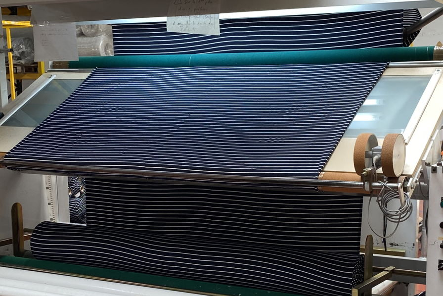

Pour produire notre tissu Textique ® nous procédons en 3 grandes étapes:
- Récolte
- Transformation
- Production
- Récolte
Pour récolter notre plastique nous nous sommmes associés avec The SeaCleaner.

Cette ONG récupère le plastique rejeté en mer avec ses bateaux que nous achetons ensuite pour financer cette organisation. - Transformation
Après avoir récupéré le plastique nous le transformons en une fibre textile que nous exploitons ensuite pour créer nos différents produits.
 - Production
Enfin, nos produits sont confectionnés dans nos usines en France, le tout en étant neutre en carbone.
